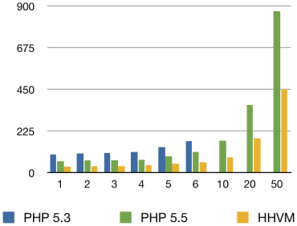

A New Type of PHP:
HHVM and Hack
Jeremy Mikola
jmikola
HHVM
Lifetime of a Request
Bytecode Interpreter
Native Code JIT
Repo Authoritative
Pre-compile HHBC: hhvm --hphp -t analyze
Benchmarking HHVM
Small Responses (7 KB)
|
Requests / Second |
Response Time (ms) |
Medium Responses (80 KB)
|
Requests / Second |
Response Time (ms)  |
Large Responses (220 KB)
|
Requests / Second |
Response Time (ms) |
PHP Is Getting a JIT, Too
Installing HHVM
Grab a Snickers…

Hack
<?hh